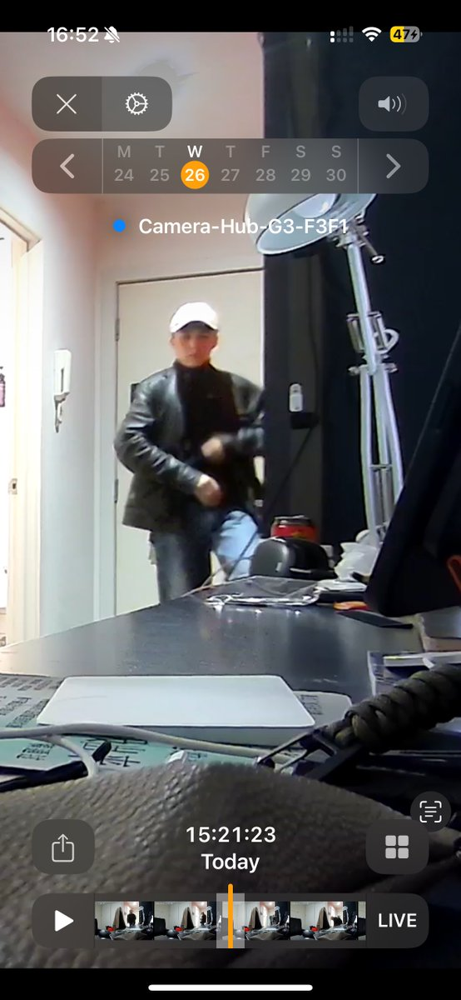
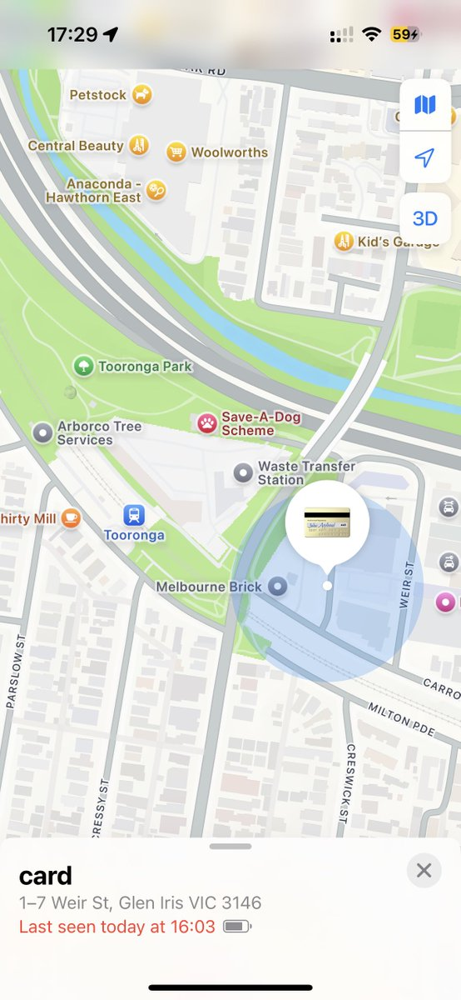

Catherina（赛博咬人黑猫）
@CatherinaMeow
悬赏A$500抓小偷
2026.8.26 15:21 有个疑似亚裔进入了我的屋子盗窃 Waverley Road, Malvern East
丢失两个钱包 一个蓝色袋子 人民币约2k 港币约2k 澳大利亚刀约500 驾照 无线电执照 AHA证书 银行卡信用卡若干
最后出现位置是Tooronga 站 沿铁路逃窜
现在已经报警了，如果能提供任何有效线索协助警方追回我的物品，酬谢 A$500 或 人

